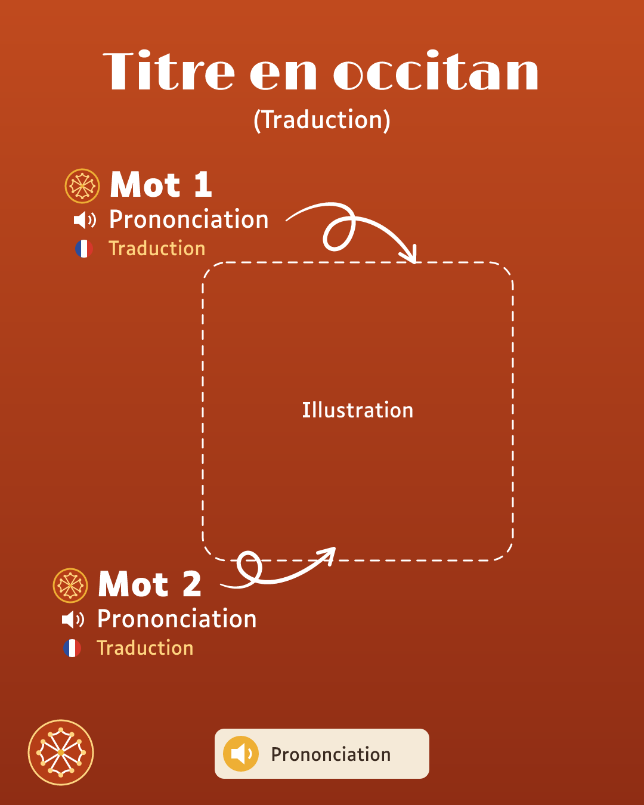
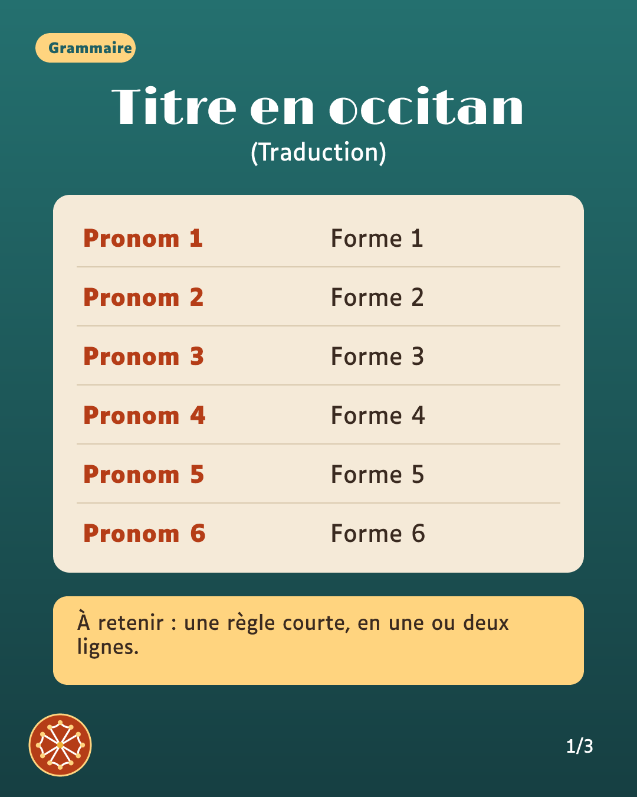
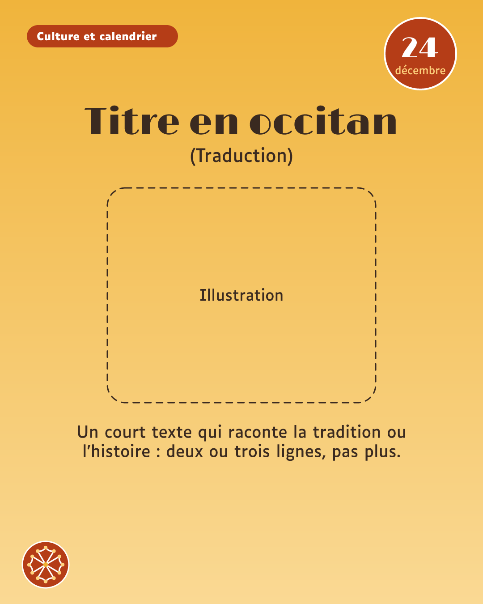
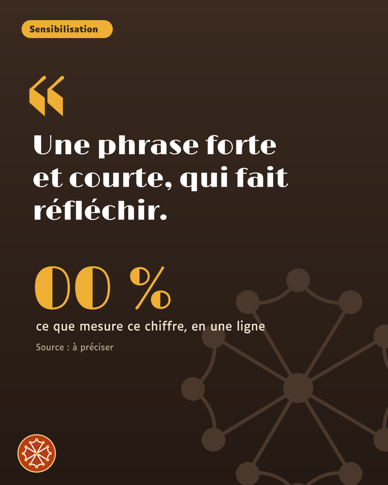
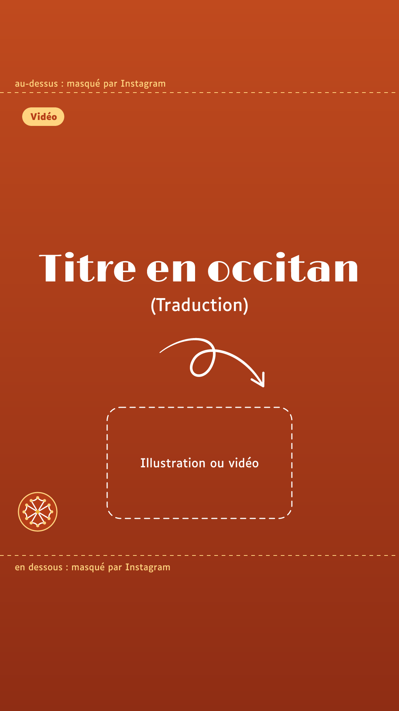
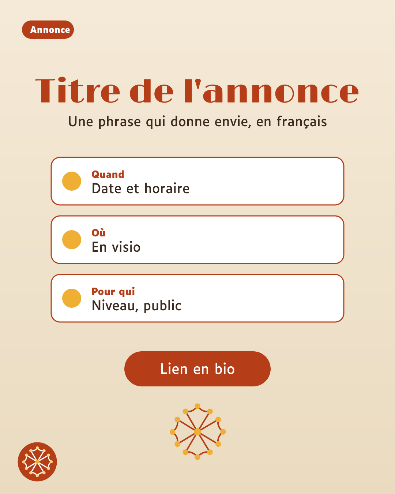

Couleurs par famille (proposées le 12 octobre, jamais validées)
1 Vocabulaire · brique
2 Grammaire et langue · pétrole
3 Culture et calendrier · or, texte brun
4 Sensibilisation · brun
5 Vidéo · brique, 9:16
6 Annonces · crème
La carte selon le fond et la couleur de mise en lumière